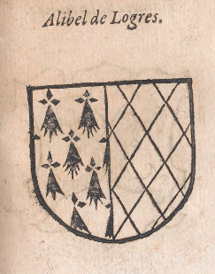
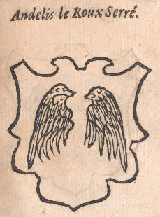
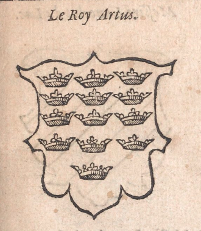
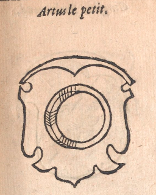
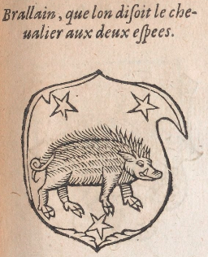
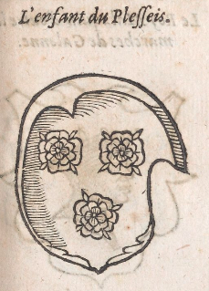
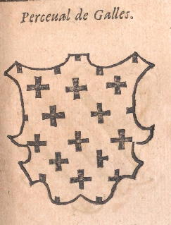
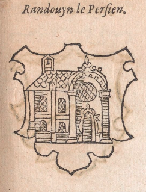
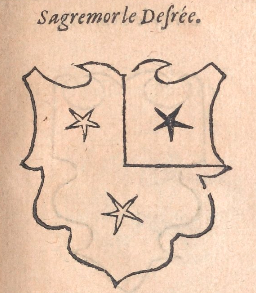

 Alibel de Logres Alibel de Logres Alibel de Logres portoit le premier de Lozenges et l’autre d’Hermines. Cestuy-cy ne fut pas sans grand bruict et renom, et acquist maintes choses en l’estat de toute prouësse.
 Andelis le Roux Serré Andelis le Roux Serré Andelis le Roux Serré portoit d’argent à deux aisles de sable. Cestuy cy fut preux et hardy en toutes ses affaires, et fut l’vn de la table ronde.
Roy ArtusRoy Artus Le Roy Artus portoit en ses armes d’Azur à treize couronnes d’or. Il fut grand conquerant, et fit nobles et vaillantes prouësses. Il institua l’ordre de la table ronde au pays de la grand Bretaigne, à laquelle devoyent comparoir une fois l’an, au jour de la Pentecoste, tous les chevaliers errans.
 Artus le petit Artus le petit Artus le petit portoit de sable à vn sycamor d’or. Il estoit des plus preux et puissans de son aage et bien à dextre aux faicts d’armes et de noblesse.
 Brallain, que lon disoit le cheualier aux deux espees Brallain, que lon disoit le cheualier aux deux espees Brallain, que lon disoit le cheualier aux deux espees portoit d’argent à vn sanglier de sable à trois estoilles d’azur. Cestuy ne diminua pas l’estat de la table ronde, ains l’ennoblit et multiplia abondamment.
 L’enfant du Plesseis L’enfant du Plesseis L’enfant du Plesseis portoit de gueulles à trois roles d’argent. Les trois roses d’argent insinuoyent et donnoyent à coniecturer qu’il estoit de noble et amoureux affaire.
 Perceual de Galles. Perceual de Galles. Perceual de Galles portoit de pourpre semé de croisettes d’or. Cestuy fut celuy qui s’assist au lieu vague de la table ronde, qui estoit seulement destiné à vn qui seroit vierge, et de luy a esté compillé vn hure que lon nomme Perceual.
 Randouyn le Persien Randouyn le Persien Randouyn le Persien portoit de sable à vne chapelle d’argent. Bien peut estre qu’il estoit de Perse, dont il portoit le nom, ou autrement surnommé à plaisir, ou pour autre cause. Ces armes semblent estre assez nobles.
 Sagremor le Desrée Sagremor le Desrée Sagremor le Desrée portoit de Sable à deux estoilles d’or a un quanton d’argent, dessus une estoille de Sable. Assez bien paroist à son nom et encore plus à ses armes qu’il estoit de grand cœur et souveraine hardiesse comme l’un de ses consors et associez à la table ronde.